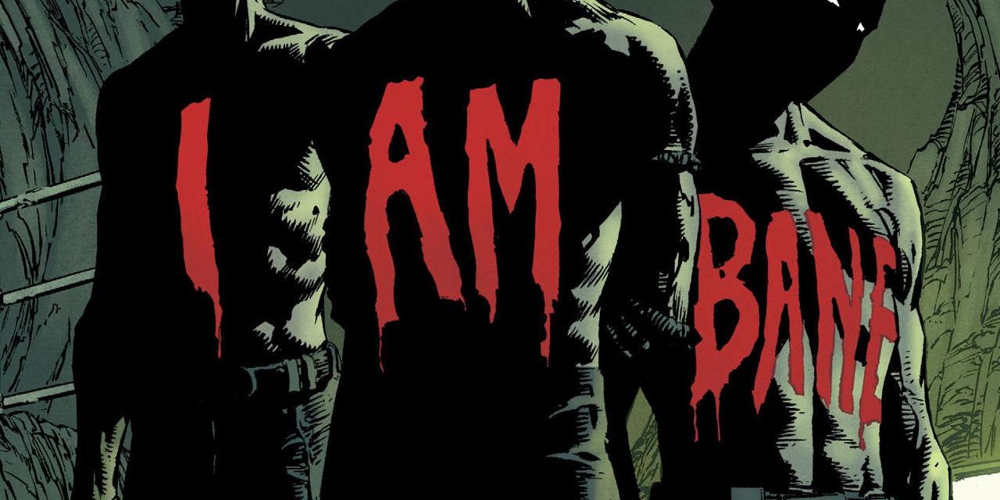
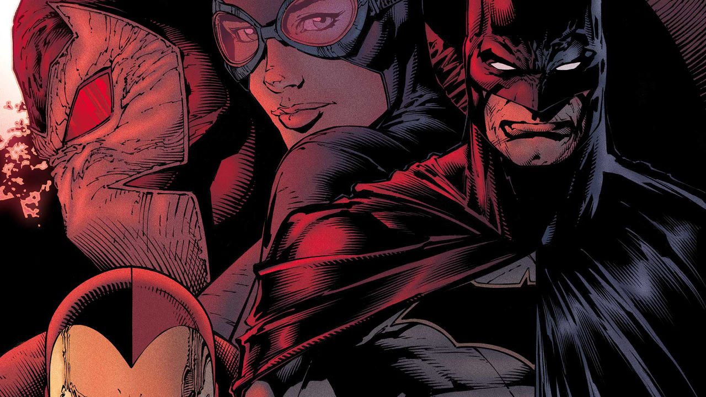

ANALISIS |
Por: Germán Perrotta
Bane vuelve una vez más a la vida del murciélago. Y eso no es para nada bueno…para Batman.
“I Am Bane” marca el final del tercer arco y también funciona como una conclusión del run entero, que comenzó con “I Am Gotham” y continuó con “I Am Suicide”, en su intento por alejar al personaje del Bat-God de Grant Morrison y de la versión mostrada por Scott Snyder, para desarrollar una que se mueve mucho más dentro de los grises, como ya habrán podido ver si vienen leyendo sus cómics.
La historia comienza en el #16, con Batman y Bronze Tiger frenando a un guardia de Arkham en su intento por liberar a Psycho Pirate, quien está en manos del murciélago después de haberlo sacado de Santa Prisca con la ayuda de varios villanos reclutados por el héroe en Arkham y no sin antes por supuesto, haber peleado contra Bane, quien tiene como objetivo vengarse de todos en su vuelta a Gotham City, motivo que lleva a Batman a avisarles del peligro en el que se encuentran a todos sus aliados.
A todo esto, Batman deja en claro que el tratamiento para curar a Gotham Girl tomará cinco días, el mismo número de ejemplares que utiliza King para su relato y que termina siendo clave para entender la línea temporal en la que se llevan a cabo los eventos. La mayoría de este número se desarrolla en Batburger, el local de comidas rápidas inspirado en Batman, sus aliados y villanos, uno que muestra la influencia del personaje dentro de la ciudad y con la que Bruce Wayne no está muy contento, en especial cuando el cajero le pregunta si quiere “Jokerizar” sus papas fritas, oferta a la que el multimillonario le responde: “El Joker es un homicida maniático. Un agente del caos. Quiere matarnos a todos sólo para reírse sobre nuestras tumbas”. Ustedes podrán decir que es una respuesta súper exagerada de parte de King, yo lo tomo como una crítica al fanatismo que muchos lectores tienen por el villano.
Después de esa bajada de línea, se reúne con Dick, Jason, Damian y Duke, el único compañero de Batman que todavía no murió, en especial si tenemos en cuenta que todos creen que Tim también está muerto. Más allá de ver a Batman comer una hamburguesa con cubiertos (persona detestable), lo reúne allí para decirles que Bane va a visitar la ciudad y que no quiere que lo ayuden. Típico. La sorpresa viene cuando al final del número, Bruce, Gotham Girl y Alfred se encuentran con Dick, Jason y Damian colgados dentro de la baticueva con sus cuerpos pintados con la leyenda “I Am Bane”. La amenaza es real.
Este número marca el regreso de David Finch como dibujante regular después del excelente trabajo realizado por Mikel Janin en el arco anterior y a pesar de que su trabajo no es malo, siempre me queda la sensación de que Finch le podría poner más ganas a las caras de los personajes. Si no fuese por el color de ojos y los cortes de pelo, Bruce, Dick y Jason tienen la misma cara. No son trillizos.
Ya en el siguiente, Batman comienza a actuar movido por el miedo, algo que no está acostumbrado a hacer y nosotros a verlo. Pero cuando se trata de Bane, todo cobra sentido, al menos en manos de King, quien sabe cómo mostrar al personaje aterrorizado por su primer encuentro (icónico) con el villano. Este miedo lo lleva a meter a sus tres “hijos” dentro de unas cámaras que los mantiene dormidos y los lleva a la Fortaleza de la Soledad, donde le pide a Superman que los cuide hasta que se haga cargo de la amenaza que ya apareció.
Acá es donde King se destaca al humanizar a Batman y a Bruce, quien siempre demuestra tener todo bajo control con cualquier tipo de antagonista…a excepción de Bane, quien podríamos decir que es su kryptonita. Esto es relativamente novedoso, ya que en los últimos años el personaje está más cerca de ser una fuerza omnipotente que de ser una persona de carne y hueso.
También están muy bien las apariciones de Alfred, quien utilizando sus habilidades actorales se hace pasar por Arkham y de Catwoman, quien aparece para ayudar a su novio (?) con uno de los aliados de Bane. Están muy bien y a la vez se puede apreciar que todos, Superman incluido, hacen cosas no muy comunes de ver en un cómic de Batman, ya que King conecta a Gotham con el resto del Universo DC.
Obviamente, todas estas decisiones basadas en el miedo llevan a Bane a capturar a todos su aliados y para salvarlos Batman debe devolverle al Psycho Pirate. Esto lo saca al villano y comienza la pelea entre los protagonistas. Una que es completamente brutal gracias a los dibujos de Finch, a quien debe haberse frotado las manos cuando leyó que la batalla se desarrollaría en una noche de tormenta y para mi sorpresa le dedicó mucho tiempo al lenguaje corporal y a las expresiones faciales. Este enfrentamiento que tiene pausas, gracias a unos flashbacks en los que el dibujante y el guionista muestran los paralelismos entre Bruce y Bane durante su juventud. Me animo a decir que esta parte es la mejor o al menos la que más me gustó de todo el arco, ya que profundiza en la dicotomía entre natura y nurtura. Ambos perdieron a sus padres y decidieron entrenar su mente y su cuerpo hasta el límite, pero la diferencia radicó en las personas a su alrededor y el contexto en el que se criaron. Bruce tuvo a Alfred, Gordon y a la fortuna de su familia, mientras que Bane estuvo solo en una prisión sin una figura a quien seguir como ejemplo. King lo convierte en alguien mucho más humano.
Y como siempre, Batman tiene un plan, que lleva a su oponente dentro de Arkham Asylum, donde varios de los villanos hicieron un trato con el héroe para que sus condiciones allí adentro sean mejores si lo ayudan a frenarlo, algo completamente imposible para cualquiera de ellos, incluso para Solomon Grundy. Esto lleva a Bane a ser el protagonista del cómic, ya que en su viaje en las profundidades del asilo, entendemos el por qué de su odio. Él se encontraba retirado y en paz dentro de su isla, sin la necesidad de utilizar “venom”, la sustancia a la que es adicto y deja en claro que él no es como el resto de los villanos por dos motivos: es el único que pudo derrotar a Batman y lo más importante, no quiere ser como ellos. Lo culpa a Batman por haberlo traído de nuevo a un mundo de criminales en el que él ya no quería estar.
En el número final, Finch se luce (a su estilo) con una salvaje demostración del poder de Bane y la violencia aplicada a Batman, que lo lleva a pisarle continuamente la espalda con unas botas con pinches, mientras lo insulta y le pregunta si sabe quién es ahora. Su arte es elevado por Danny Miki (clásico entintador a esta altura) y los colores de la crack de Jordie Bellaire, que contribuyen a la brutalidad de las escenas. Pero más allá de la espectacularidad, King se encarga de mostrar qué sucede dentro de la cabeza de Batman mientras recibe la golpiza en una escena que no quiero spoilear pero que deja en claro la evolución del personaje desde el comienzo del run.
Desafortunadamente, el final del cómic me dejó con gusto a poco, ya que su conclusión es completamente abrupta. No hay giros, sorpresas o revelaciones de ningún tipo. Todo culmina con un golpe a cargo del murciélago y muchos plots que no son resueltos, ni siquiera el de Gotham Girl, el principal de toda la historia. Es algo que me sorprende para mal, porque en los siguientes ejemplares veremos a Batman investigar el pin del Comediante y la conexión del Universo DC con Watchmen. Supongo que habrá que esperar para saber qué es lo que pasará con ella, Bane y los demás recién a partir del #23.
“I Am Bane” debe ser una de las mejores historias del villano en su historia, una que alcanzó su pico de popularidad allá por los años ’90 cuando le rompió la espalda a Bruce y que de ahí en más se fue a pique a pesar de su aparición en Secret Six. En este run, King vuelve a darle mucha importancia y profundiza más en su naturaleza, una que lo distingue del resto y que al mismo tiempo demuestra la vulnerabilidad del héroe como hacía mucho tiempo que no se veía en sus cómics.
ANÁLISIS: “BATMAN: I AM BANE” (ARCO COMPLETO)